Viaggio di nozze
Islanda
Se volete contribuire al nostro viaggio di nozze, potete farlo con un bonifico.
- IBAN
IT94Z0329601601000067841707- Intestato a
- Ambrogio Silecchia e Francesca Micheletti
- Causale
- Viaggio di nozze
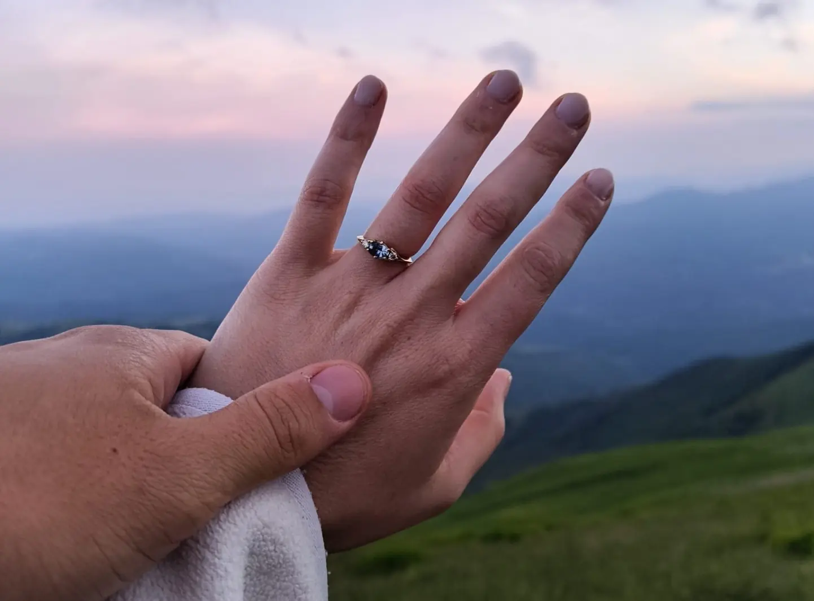
Ci sposiamo
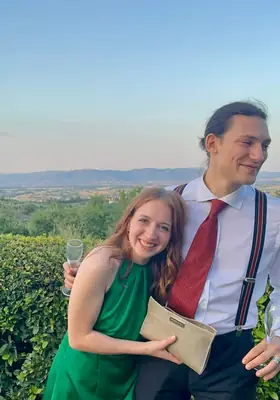
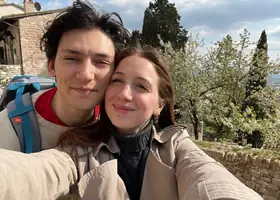
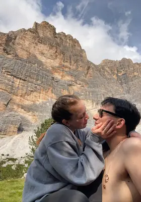
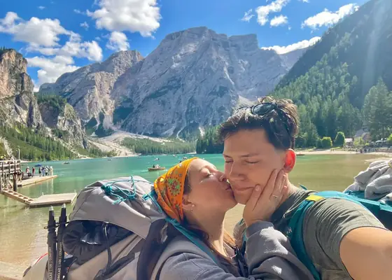
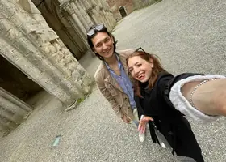
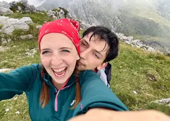
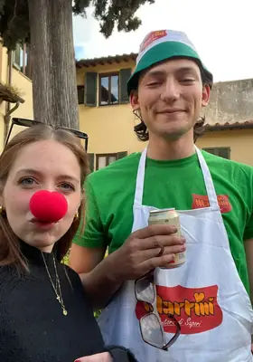
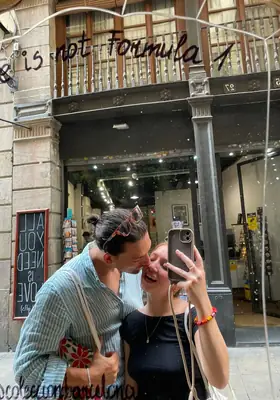
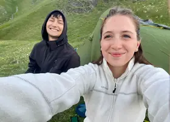
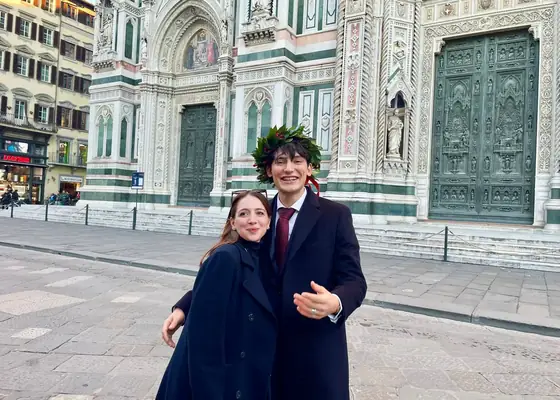
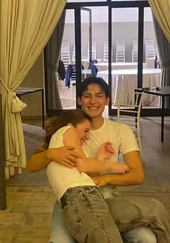
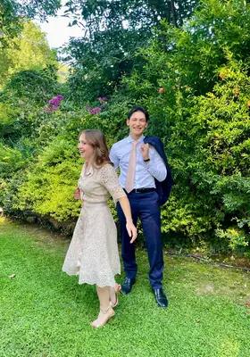
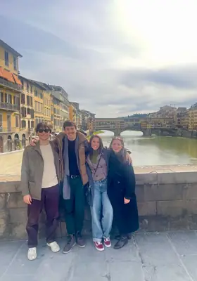
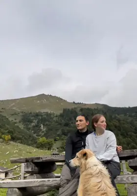
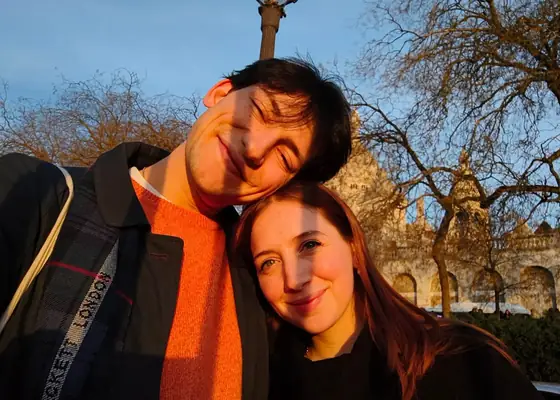
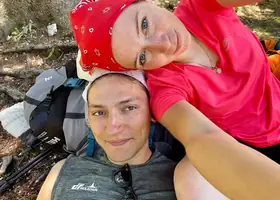
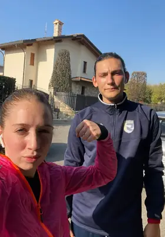
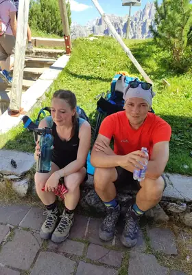
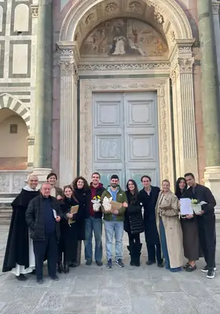
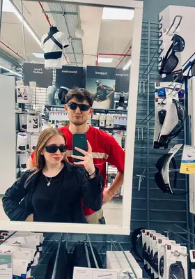
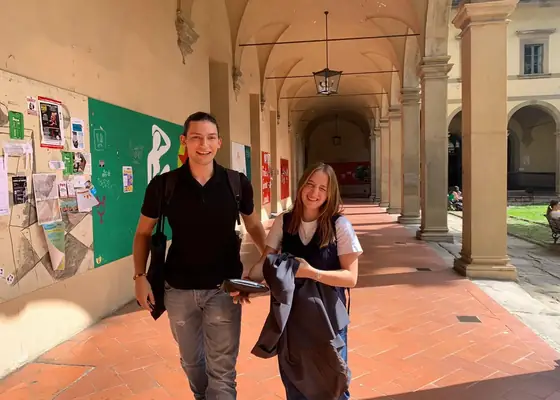
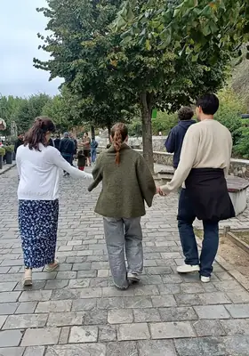
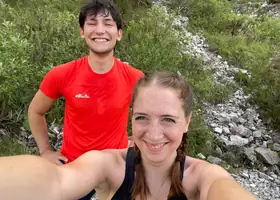
Ore 14:30
Dalle 16:30
Regalo di nozze
Il regalo più bello è avervi con noi. Se però volete farci un pensiero, ecco due idee.
Viaggio di nozze
Se volete contribuire al nostro viaggio di nozze, potete farlo con un bonifico.
IT94Z0329601601000067841707
RSVP
Fatecelo sapere il prima possibile: ci aiuta tanto a organizzare.